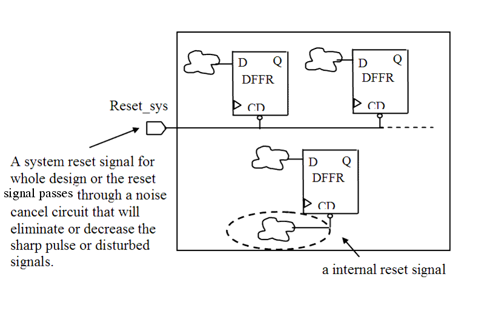
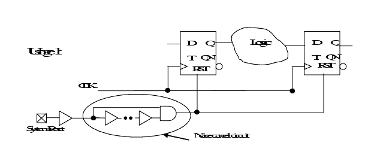
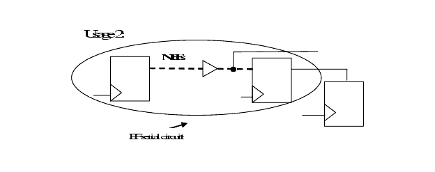

| Description | This rule fires when Leda detects set or reset pins for flip-flops or latches that are not connected to system reset/set signal or noise cancel circuit. Connecting such set or reset pins to a system reset/set signal or noise cancel circuit makes them observable and controllable, and helps prevents sequence errors caused by circuit noise, where system reset/set are an external ports or buffered/inverted external ports, and noise cancel circuit is an AND/NAND/OR/NOR gate whose inputs come from the same signal and there are some buffers in one of the paths. Another legal case by this rule is: N number of flip-flops serial connected circuit is connected to the reset/set of flip-flops or latches, even if there are same buffered/inverted, and/or there are fanouts between these flip-flops.The circuit diagram that illustrates this case can be found below. |
| Policy | DESIGN |
| Ruleset | STRUCTURE |
| Language | VHDL/Verilog |
| Type | Hardware |
| Severity | Error |
This is an example of invalid Verilog code, followed by a circuit diagram that illustrates the problem:
module ntl_str82_top ; input Reset_sys; // a system reset for whole chip reset ... wire Reset_int; // internal reset signal GTECH_FD2 U0(.D(Din), .CP(Clock), .CD(Reset_sys), .Q(Dout1)); // OK -- reset of U0.cd is connected to system reset signal GTECH_FD2 U1(.D(Din), .CP(Clock), .CD(Reset_int), .Q(Dout2)); // NTL_STR82 fires -- reset of U1.CD is connected to // internal reset signal endmodule
Another 2 usages are:

